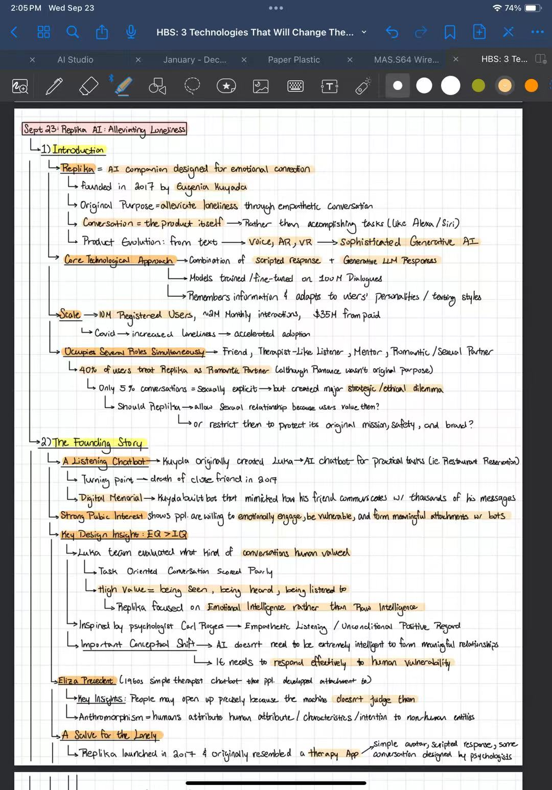
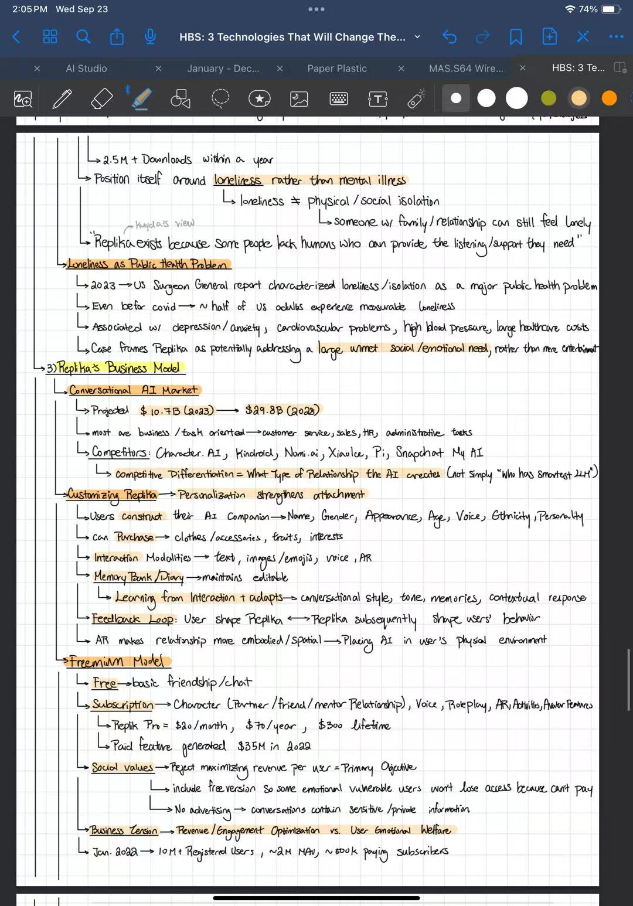
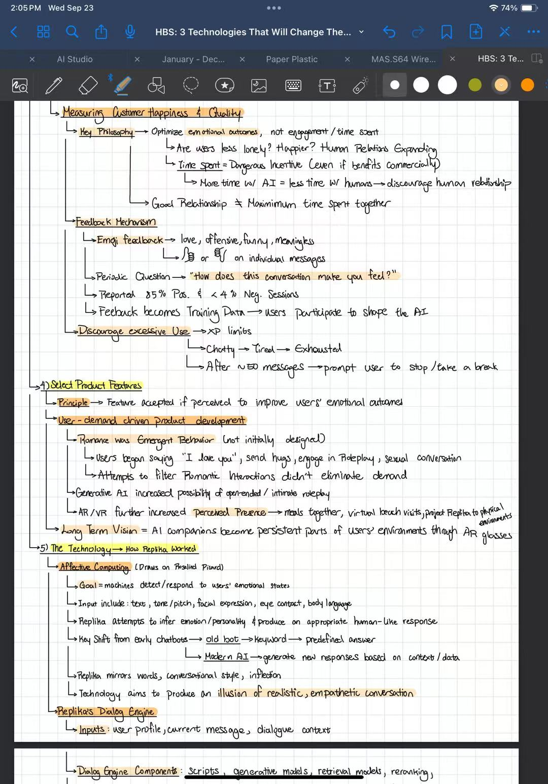
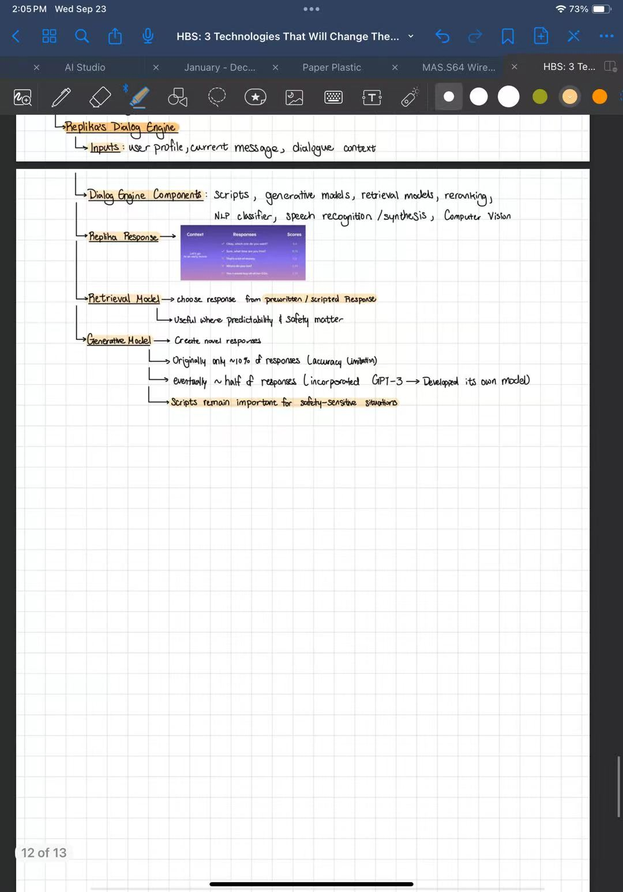
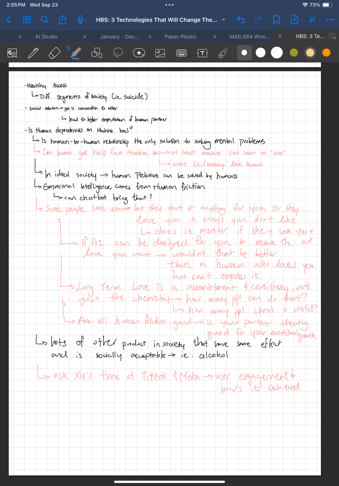

Sept 23: Replika AI — Alleviating Loneliness. The text below follows the handwritten notes without adding outside interpretation.
01 / INTRO
Introduction
- Replika = AI companion designed for emotional connection.
- Founded in 2017 by Eugenia Kuyda.
- Original purpose: alleviate loneliness through empathetic conversation.
- Conversation = the product itself, rather than accomplishing tasks like Alexa / Siri.
- Product evolution: text → voice, AR, VR → sophisticated generative AI.
- Core technological approach: combination of scripted responses + generative LLM responses.
- Models trained / fine-tuned on 100M dialogues.
- Remembers information and adapts to users’ personalities / texting styles.
- Scale: 10M registered users, ~2M monthly interactions, $35M from paid.
- Covid → increased loneliness → accelerated adoption.
Occupies several roles simultaneously
- Friend, therapist-like listener, mentor, romantic / sexual partner.
- 40% of users treat Replika as romantic partner, although romance wasn’t the original purpose.
- Only 5% of conversations = sexually explicit, but this created a major strategic / ethical dilemma.
- Should Replika allow sexual relationships because users value them, or restrict them to protect its original mission, safety, and brand?
02 / FOUNDING
The founding story
A listening chatbot
- Kuyda originally created Luka, an AI chatbot for practical tasks such as restaurant reservations.
- Turning point: death of a close friend in 2015.
- Digital memorial: Kuyda built a bot that mimicked how her friend communicated, using thousands of his messages.
- Strong public interest showed that people are willing to emotionally engage, be vulnerable, and form meaningful attachments with bots.
Key design insight: EQ > IQ
- Luka’s team evaluated what kind of conversations humans valued.
- Task-oriented conversations scored poorly.
- High value = being seen, being heard, being listened to.
- Replika focused on emotional intelligence rather than raw intelligence.
- Inspired by psychologist Carl Rogers: empathetic listening / unconditional positive regard.
- AI doesn’t need to be extremely intelligent to form meaningful relationships; it needs to respond effectively to human vulnerability.
ELIZA precedent
- 1960s simple therapist chatbot that people developed attachment to.
- People may open up precisely because the machine doesn’t judge them.
- Anthropomorphism = humans attribute human attributes, characteristics, or intention to non-human entities.
A salve for the lonely
- Replika launched in 2017 and originally resembled a therapy app: simple avatar, scripted responses, some conversations designed by psychologists.
- 2.5M+ downloads within a year.
- Positioned around loneliness rather than mental illness.
- Loneliness ≠ physical / social isolation; someone with family / relationships can still feel lonely.
- Kuyda’s view: “Replika exists because some people lack humans who can provide the listening / support they need.”
Loneliness as public health problem
- 2023 US Surgeon General report characterized loneliness / isolation as a major public health problem.
- Even before Covid, ~half of US adults experienced measurable loneliness.
- Associated with depression / anxiety, cardiovascular problems, high blood pressure, and large healthcare costs.
- Case frames Replika as potentially addressing a large unmet social / emotional need, rather than free entertainment.
03 / BUSINESS
Replika’s business model
Conversational AI market
- Projected $10.7B (2023) → $29.8B (2028).
- Most are business / task oriented: customer service, sales, HR, administrative tasks.
- Competitors: Character.AI, Kindroid, Nomi.ai, XiaoIce, Pi, Snapchat My AI.
- Competitive differentiation = what type of relationship the AI creates, not simply “who has smartest LLM.”
Customizing Replika
- Personalization strengthens attachment.
- Users construct their AI companion: name, gender, appearance, age, voice, ethnicity, personality.
- Can purchase clothes / accessories, traits, interests.
- Interaction modalities: text, images / emojis, voice, AR.
- Memory bank / diary remains editable.
- Learning from interaction adapts conversational style, tone, memories, contextual response.
- Feedback loop: users shape Replika ↔ Replika subsequently shapes users’ behavior.
- AR makes relationship more embodied / spatial by placing AI in users’ physical environment.
Freemium model
- Free → basic friendship / chat.
- Subscription → character relationship, voice, roleplay, AR, activities, avatar features.
- Replika Pro: $20 / month, $70 / year, $300 lifetime.
- Paid features generated $35M in 2022.
- Social values: reject maximizing revenue per user as primary objective; include free version so some emotionally vulnerable users won’t lose access because they can’t pay; no advertising because conversations contain sensitive / private information.
- Business tension: revenue / engagement optimization vs. user emotional welfare.
- Jan. 2022: 10M+ registered users, ~2M MAU, ~500K paying subscribers.
04 / QUALITY
Measuring customer happiness & quality
- Key philosophy: optimize emotional outcomes, not engagement / time spent.
- Are users less lonely? Happier? Are human relations expanding?
- Time spent = dangerous incentive, even if it benefits commercially.
- More time with AI = less time with humans → may discourage human relationships.
- Good relationship ≠ maximum time spent together.
Feedback mechanism
- Emoji feedback: love, offensive, funny, meaningless; thumbs up / down on individual messages.
- Periodic question: “How does this conversation make you feel?”
- Reported 85% positive and <4% negative sessions.
- Feedback becomes training data; users participate to shape the AI.
- Discourage excessive use: XP limits; Chatty → Tired → Exhausted.
- After ~50 messages, prompt user to stop / take a break.
05 / FEATURES
Select product features
- Principle: feature accepted if perceived to improve users’ emotional outcomes.
- User-demand-driven product development.
- Romance was emergent behavior, not initially designed.
- Users began saying “I love you,” sending hugs, engaging in roleplay / sexual conversation.
- Attempts to filter romantic interactions didn’t eliminate demand.
- Generative AI increased possibility of open-ended / intimate roleplay.
- AR / VR further increased perceived presence: meals together, virtual beach visits, projecting Replika into physical environments.
- Long-term vision: AI companions become persistent parts of users’ environments through AR glasses.
06 / TECH
How Replika worked
Affective computing
- Draws on Rosalind Picard.
- Goal: machines detect / respond to users’ emotional states.
- Inputs include text, tone / pitch, facial expression, eye contact, body language.
- Replika attempts to infer emotion / personality and produce an appropriate human-like response.
- Key shift: early chatbots → old bot → keyword → predefined answer; modern AI → generate new responses based on context / data.
- Replika mirrors words, conversational style, inflection.
- Technology aims to produce an illusion of realistic, empathetic conversation.
Replika’s dialog engine
- Inputs: user profile, current message, dialogue context.
- Components: scripts, generative models, retrieval models, reranking, NLP classifier, speech recognition / synthesis, computer vision.
- Retrieval model: chooses response from prewritten / scripted responses; useful where predictability and safety matter.
- Generative model: creates novel responses.
- Originally only ~10% of responses because of accuracy limitation.
- Eventually ~half of responses; incorporated GPT-3, then developed its own model.
- Scripts remain important for safety-sensitive situations.
07 / QUESTIONS
Questions recorded in class
Human relationships
Is human dependency on machines bad? Is human-to-human relationship the only solution to solving mental problems? Can humans get help from machines too—at least a machine can learn to “care” and won’t lie / betray like humans?
Human friction
In an ideal society, can human relations be solved by humans? Emotional intelligence comes from human friction—can chatbot bring that?
- Some people love you, but they don’t do anything for you; or they love you in ways you don’t like. Does it matter if they love you?
- If AI can be designed for you to receive the most love you want, would that be better than a human who loves you but can’t express it?
- Long-term love is commitment and consistency, not just chemistry. How many people can do that? How many people cheat?
- Are all human frictions good? Is your partner cheating good for your emotional growth?
- Many products in society have similar effects and are socially acceptable, e.g. alcohol.
- Healthy access differs across segments of society, e.g. suicide.
- Social relation: people’s connection to others may lead to higher expectation of human partner.
- Ask Xir’s time at TikTok & Meta: user engagement and how it is achieved.
08 / SOURCE
Original handwritten notes




